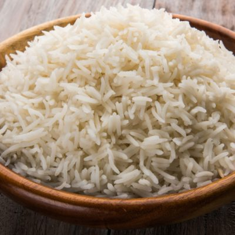

Rice

Description
Rice is a staple diet for most of the world. One of the most versatile ingredient, it can be cooked as an entree, mains or a dessert! Did you know that there are more than 40,000 varieties of rice?
Ingredients
- Rice
- Garlic
- Olive Oil
- Whole Black Pepper
Steps
- Mince garlic clove
- Add minced garlic, olive oil, and 5 whole black pepper to pot
- Add one cup of rice
- Add two cups of water
- Cook over medium heat for 12 minutes
- Serve